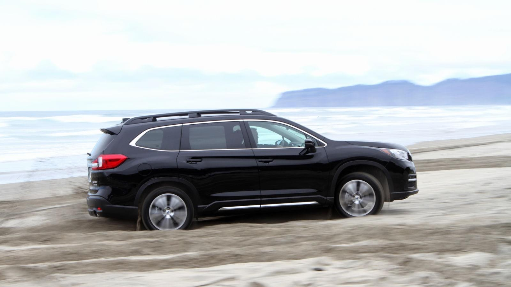

The 2019 Subaru Ascent Is
The Three-Row SUV That
Actually Feels Like A
Subaru

Harish Gurjar
wednesday 9:06 pm
wednesday 9:06 pm

Though Subaru’s sales game has been unstoppable in recent years, even as it keeps making fun and good things for us to drive, there’s one lucrative segment it has yet to conquer—the big three-row crossover one. The 2019 Subaru Ascent aims to change that, and unlike the black sheep Tribeca it actually looks and feels like a Subaru.
And I’m happy to report it handles far better than anything made to haul seven or eight people really should.

The 2019 Subaru Ascent is a three-row crossover that was designed to satiate America’s undying demand for such cars. Subaru wants a piece of that action, except this time, they wanted to make one that was undeniably a Subaru. This is the biggest, most expensive Subaru ever made, and it will no doubt print more money than the Federal Reserve.
Years ago Subaru tried to keep growing families in its own family with the Tribeca, but that one never quite hit the mark. Early ones were a bit too awkwardly snouted, and later ones just looked blobby and bland. Worst of all, neither design looked like a Subaru. The boxer-powered guts were there, but the chunky, rugged styling we’ve all come to associate with the Official Car Of Vermont wasn’t, and it was a major sales flop for the company.
The Ascent comes with all-wheel-drive and a 2.4-liter turbocharged dual overhead cam boxer four-cylinder engine on every trim. That turbo four pumps out a claimed 260 horsepower and 270 lb-ft of torque, which it sends to an all-new continuously variable transmission designed for the Ascent.
Various Subaru representatives defended going with this one engine option vigorously during the weekend, contending that the boxer four allowed them to keep the center of gravity low, and that they tuned it for decent low-range torque.
While tighter regulations regarding emissions and fuel economy influenced that decision a little, the Ascent’s engine really didn’t need to be defended. The Ascent did not feel underpowered—even before boost kicked in, and even while towing a trailer.
This could be a practical vehicle for more than just families. Like the Volkswagen Atlas, it tows a respectable amount for those of us whose “children” ride on a trailer instead of inside the car: 5,000 pounds. Yet the Ascent was more fun to drive, easier to use and comes with a lot more standard features than the others.
The only other mass-market three-row SUV I’ve tested that drives this well is the Mazda CX-9, whose graceful roofline caused me to hit my head one too many times getting in and out of the vehicle and tow capacity peaked at just 3,500 pounds. It was a vastly less practical car than the Subie.
However, all-wheel-drive is an extra cost add-on on both of these cars that makes a similarly optioned CX-9 or Atlas more expensive than the equivalent Ascent.